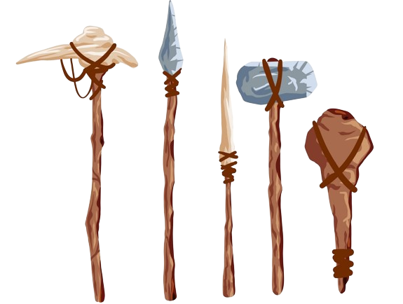

Introduction
The term technology, a combination of the Greek technē, “art, craft,” with logos, “word, speech,” meant in Greece a discourse on the arts, both fine and applied. When it first appeared in English in the 17th century, it was used to mean a discussion of the applied arts only, and gradually these “arts” themselves came to be the object of the designation. By the early 20th century the term embraced a growing range of means, processes, and ideas in addition to tools and machines. By mid-century technology was defined by such phrases as “the means or activity by which man seeks to change or manipulate his environment.” Even such broad definitions have been criticized by observers who point out the increasing difficulty of distinguishing between scientific inquiry and technological activity.
A highly compressed account of the history of technology such as this one must adopt a rigorous methodological pattern if it is to do justice to the subject without grossly distorting it one way or another. The plan followed in the present article is primarily chronological, tracing the development of technology through phases that succeed each other in time. Obviously, the division between phases is to a large extent arbitrary. One factor in the weighting has been the enormous acceleration of Western technological development in recent centuries; Eastern technology is considered in this article in the main only as it relates to the development of modern technology.
Within each chronological phase a standard method has been adopted for surveying the technological experience and innovations. This begins with a brief review of the general social conditions of the period under discussion, and then goes on to consider the dominant materials and sources of power of the period, and their application to food production, manufacturing industry, building construction, transport and communications, military technology, and medical technology. In a final section the sociocultural consequences of technological change in the period are examined. This framework is modified according to the particular requirements of every period— discussions of new materials, for instance, occupy a substantial place in the accounts of earlier phases when new metals were being introduced but are comparatively unimportant in descriptions of some of the later phases—but the general pattern is retained throughout. One key factor that does not fit easily into this pattern is that of the development of tools. It has seemed most convenient to relate these to the study of materials, rather than to any particular application, but it has not been possible to be completely consistent in this treatment. Further discussion of specific areas of technological development is provided in a variety of other articles: for example, see electronics; exploration; information processing.

General Considerations
 Essentially, techniques are methods of creating new tools and products of tools, and the capacity for constructing such artifacts is a determining characteristic of humanlike species. Other species make artifacts: bees build elaborate hives to deposit their honey, birds make nests, and beavers build dams. But these attributes are the result of patterns of instinctive behaviour and cannot be varied to suit rapidly changing circumstances. Human beings, in contrast to other species, do not possess highly developed instinctive reactions but do have the capacity to think systematically and creatively about techniques. Humans can thus innovate and consciously modify the environment in a way no other species has achieved. An ape may on occasion use a stick to beat bananas from a tree, but a person can fashion the stick into a cutting tool and remove a whole bunch of bananas. Somewhere in the transition between the two, the hominid, the first humanlike species, emerges. By virtue of humanity’s nature as a toolmaker, humans have therefore been technologists from the beginning, and the history of technology encompasses the whole evolution of humankind.
In using rational faculties to devise techniques and modify the environment, humankind has attacked problems other than those of survival and the production of wealth with which the term technology is usually associated today. The technique of language, for example, involves the manipulation of sounds and symbols in a meaningful way, and similarly the techniques of artistic and ritual creativity represent other aspects of the technological incentive. This article does not deal with these cultural and religious techniques, but it is valuable to establish their relationship at the outset because the history of technology reveals a profound interaction between the incentives and opportunities of technological innovation on the one hand and the sociocultural conditions of the human group within which they occur on the other.
Timeline
The first tools
(3.3 million years ago)
Fire
(1 million years ago)

Neolithic Revolution
(15,000 years ago)
Irrigation
(6000 BCE)
Sailing
(4000 BCE)
Iron
(1200 BCE)
Gunpowder
(850 CE)
Windmill
(950 CE)
Compass
(1044 CE)

Mechanical clock
(1250–1300 CE)

Printing
(1455 CE)
Steam engine
(1765 CE)

Railways
(1804 CE)
Steamboat
(1807 CE)

Photography
(1826/27 CE)

Reaper
(1831 CE)

Telegraph
(1844 CE)

Telephone
(1876 CE)
Internal-combustion engine
(1876 CE)

Electric light
(1879 CE)
Automobile
(1885 CE)

Radio
(1901 CE)
Airplane
(1903 CE)
Rocketry
(1926 CE)
Television
(1927 CE)

Computer
(1937 CE)
Nuclear power
(1942 CE)
Transistor
(1947 CE)

Spaceflight
(1957 CE)

Personal computer
(1974 CE)
Internet
(1974 CE)
CRISPR
(2012 CE)

Artificial intelligence
(2017 CE)
Technology in the ancient world
The beginnings—Stone Age technology (to c. 3000 BCE)
The identification of the history of technology with the history of humanlike species does not help in fixing a precise point for its origin, because the estimates of prehistorians and anthropologists concerning the emergence of human species vary so widely. Animals occasionally use natural tools such as sticks or stones, and the creatures that became human doubtless did the same for hundreds of millennia before the first giant step of fashioning their own tools. Even then it was an interminable time before they put such toolmaking on a regular basis, and still more aeons passed as they arrived at the successive stages of standardizing their simple stone choppers and pounders and of manufacturing them—that is, providing sites and assigning specialists to the work. A degree of specialization in toolmaking was achieved by the time of the Neanderthals (70,000 BCE); more-advanced tools, requiring assemblage of head and haft, were produced by Cro-Magnons (perhaps as early as 35,000 BCE); while the application of mechanical principles was achieved by pottery-making Neolithic (New Stone Age; 6000 BCE) and Metal Age peoples (about 3000 BCE).
Earliest communities
For all except approximately the past 10,000 years, humans lived almost entirely in small nomadic communities dependent for survival on their skills in gathering food, hunting and fishing, and avoiding predators. It is reasonable to suppose that most of these communities developed in tropical latitudes, especially in Africa, where climatic conditions are most favourable to a creature with such poor bodily protection as humans have. It is also reasonable to suppose that tribes moved out thence into the subtropical regions and eventually into the landmass of Eurasia, although their colonization of this region must have been severely limited by the successive periods of glaciation, which rendered large parts of it inhospitable and even uninhabitable, even though humankind has shown remarkable versatility in adapting to such unfavourable conditions.

Neolithic Revolution
The Neolithic Revolution Toward the end of the last ice age, some 15,000 to 20,000 years ago, a few of the communities that were most favoured by geography and climate began to make the transition from the long period of Paleolithic, or Old Stone Age, lifestyles to a more settled way of life depending on animal husbandry and agriculture. This period of transition, the Neolithic Period, or New Stone Age, led eventually to a marked rise in population, to a growth in the size of communities, and to the beginnings of town life. It is sometimes referred to as the Neolithic Revolution because the speed of technological innovation increased so greatly and human social and political organization underwent a corresponding increase in complexity. To understand the beginnings of technology, it is thus necessary to survey developments from the Old Stone Age through the New Stone Age down to the emergence of the first urban civilizations about 3000 BCE.
Stone
The material that gives its name and a technological unity to these periods of prehistory is stone. Though it may be assumed that primitive humans used other materials such as wood, bone, fur, leaves, and grasses before they mastered the use of stone, apart from bone antlers, presumably used as picks in flint mines and elsewhere, and other fragments of bone implements, none of these has survived. The stone tools of early humans, on the other hand, have survived in surprising abundance, and over the many millennia of prehistory important advances in technique were made in the use of stone. Stones became tools only when they were shaped deliberately for specific purposes, and, for this to be done efficiently, suitable hard and fine-grained stones had to be found and means devised for shaping them and particularly for putting a cutting edge on them. Flint became a very popular stone for this purpose, although fine sandstones and certain volcanic rocks were also widely used. There is much Paleolithic evidence of skill in flaking and polishing stones to make scraping and cutting tools. These early tools were held in the hand, but gradually ways of protecting the hand from sharp edges on the stone, at first by wrapping one end in fur or grass or setting it in a wooden handle, were devised. Much later the technique of fixing the stone head to a haft converted these hand tools into more versatile tools and weapons.
Power
The use of fire was another basic technique mastered at some unknown time in the Old Stone Age. The discovery that fire could be tamed and controlled and the further discovery that a fire could be generated by persistent friction between two dry wooden surfaces were momentous. Fire was the most important contribution of prehistory to power technology, although little power was obtained directly from fire except as defense against wild animals. For the most part, prehistoric communities remained completely dependent upon manpower, but, in making the transition to a more settled pattern of life in the New Stone Age, they began to derive some power from animals that had been domesticated. It also seems likely that by the end of prehistoric times the sail had emerged as a means of harnessing the wind for small boats, beginning a long sequence of developments in marine transport.

Building techniques
Prehistoric building techniques also underwent significant developments in the Neolithic Revolution. Nothing is known of the building ability of Paleolithic peoples beyond what can be inferred from a few fragments of stone shelters, but in the New Stone Age some impressive structures were erected, primarily tombs and burial mounds and other religious edifices, but also, toward the end of the period, domestic housing in which sun-dried brick was first used. In northern Europe, where the Neolithic transformation began later than around the eastern Mediterranean and lasted longer, huge stone monuments, of which Stonehenge in England is the outstanding example, still bear eloquent testimony to the technical skill, not to mention the imagination and mathematical competence, of the later Stone Age societies.
From the Middle Ages to 1750
The medieval era often is considered a time of modest achievements, literally a middle period between the substantial intellectual achievements of Greece and Rome and the Renaissance. Yet this sweeping generalization was not true for technology, which underwent great changes during these years. The decline of the Roman Empire, the emergence of the feudal system, the growing frequency of international trade, and, European exposure to the Middle East through the Crusades changed the way people lived. The Middle Ages were a period of substantial achievement in agriculture, new power sources, mechanization, military weapons, transportation, and construction. These developments so transformed technology that they produced a medieval industrial revolution.
Power from Water and Wind
In Roman times, slaves and animals were the chief sources of power. The Christian Church, however, frowned on slavery so the practice diminished in Western Europe (although many forms of serfdom were hardly better than slavery). To compensate, natural power sources such as water- and windmills replaced animate power. These mills, which dotted the landscape, were used to grind grain, saw timber, full (shrink, thicken, and press) cloth, drive bellows, and power forge hammers. The mills' widespread distribution and use made them the prime power sources of Western Europe, each providing the equivalent of about 20 horsepower.

Agriculture
Several significant innovations in agricultural techniques changed the way food was produced during the Middle Ages. The development of the wheeled moldboard plow and coulter allowed farmers to cultivate the heavy, wet soils of Northern Europe. The new plow needed at least four (and as many as eight) oxen to pull it. Its size and weight also made turning at the end of a furrow difficult. To make plowing easier, fields changed from their traditional square shape to long narrow strips. With the invention of the padded horse collar a hundred or so years later, farmers were able to use horses rather than oxen to pull the plow. Because horses were faster and could work longer than oxen, the amount of land that could be farmed—and the amount of food it produced—increased. With the further adoption of horseshoes, horses became both beasts of burden and a means of transportation for the agrarian community.
In addition to the new plow and the wider use of horses, farmers began to adopt the three-field crop-rotation system in which one-third of the land was sown in spring crops (peas and beans), one-third in fall crops (wheat, oats) and one-third left as pasture or fallow land. Each parcel of land was used in a cycle called the triennial system. This more efficient use of the land increased food production and renewed the soil, giving people more, better, and varied food as well as vegetable protein, which is important for a healthy diet.
These important developments increased food supplies, supported a larger population, and encouraged the growth of commercial centers and towns. The resulting increase in wealth through increased trade and commerce helped move Western Europe from an agrarian society to a more urban-based culture in the latter part of the medieval era.
A Mechanical Age
The extensive use of water- and windmills was made possible by advancements in mechanical technology, especially the use of gears, cranks, cams, camshafts, flywheels, and connecting rods, which transformed the motion of a water mill wheel or windmill sail into a variety of useful tasks such as lifting, pounding, or sawing. The mechanical acumen crasftsmen gained from building and maintaining these mills also played a key role in the development of spring- and weight-driven clocks. These intricate mechanical devices became common in the fourteenth century both as time keepers—usually having only an hour hand on the clock face—and as models of the universe. Many towns competed with each other to build the largest, most intricate clock with various moving figures and sounds. Several extant working models in various European cities continue to dazzle visitors as marvels of medieval mechanical ingenuity.

Warfare
The introduction of the stirrup, previously known only in Asia, transformed warfare and may have helped restructure society in eighth-century Western Europe. It allowed a warrior to use a lance and other arms more forcefully against an opponent while keeping his seat. This new mounted shock combat was so successful that it spread throughout Western Europe, where an armored cavalry became the military standard. Some scholars argue that the expense of outfitting a warrior with horse, armor, and associated weapons drove communities to band together to support this new military machine. In exchange for their support, these knights provided defense and security for their communities and the feudal system, so characteristic of the Middle Ages, evolved. Others contend that feudalism had so many variations in so many places that it's impossible to tie its development to one particular development.
Whatever its societal effect, mounted shock combat remained the prevailing mode of battle until the thirteenth century, when the Welsh longbow finally allowed archers to disable armored warriors. Military tactics changed yet again, capitalizing on the longbow's advantages and developing strategies to defend against it. By the fourteenth and fifteenth centuries warfare was transformed again when the introduction of gunpowder from the East led to the development of the cannon and the matchlock gun. Although firearms did not become reliable weapons until the Renaissance, their appearance in the late medieval period established a new link between the military might of a state and its quest for empire. Government interest in a strong military led to support for metallurgy, weapons development, and standing armies. This began an era of gunpowder empires in which military might led to territorial acquisition.
Ocean-going Travel
Three innovations in ship design created new transportation technology that made ocean travel much more feasible.The first was the adoption of the triangular or lateen sail that had first been used in the East. When paired with the traditional square sails on Western ships, the lateen sail allowed boats to tack or sail into the wind. Ships no longer had to wait in port for favorable winds before they could leave.

The second innovation, the stern-post rudder, gave sailors more control of their ships. Located in the middle of the boat's stern and riding below the water, the rudder was less subject to the motion of the waves and was easier to operate than the dual oars it replaced. Eventually larger rudders allowed larger ships to transport more cargo.

With the incorporation of the compass, the third innovation in ocean travel, ships could sail on cloudy days in a variety of weather conditions beyond coastal waters. As ship design advanced, lighter, stronger craft with skeleton frames began to explore and navigate the world's oceans. This, in turn, further stimulated economic and commercial activity in Europe.

The medieval period was a high point in the history of technology, a time when technology affected the lives of Western Europeans as fully as the Industrial Revolution would centuries later. The Crusades and increased ocean travel had introduced Europe to the technology of the Far and Middle East during the latter part of the era. When these new methods met local needs and talent, the two combined to produce lasting and impressive results. With their myriad achievements in warfare, agriculture, power sources, mechanics, and water transportation, medieval craftsmen created a technological revolution that is often overlooked. Fortunately, many examples of those achievements still exist. They remind us that technology can advance without much theoretical grounding and that skilled, dedicated, and motivated people play a key role in technological progress.
The Industrial Revolution
Industrial Revolution, in modern history, the process of change from an agrarian and handicraft economy to one dominated by industry and machine manufacturing. These technological changes introduced novel ways of working and living and fundamentally transformed society. This process began in Britain in the 18th century and from there spread to other parts of the world. The main features involved in the Industrial Revolution were technological, socioeconomic, and cultural. The technological changes included the following:
- The use of new basic materials, chiefly iron and steel.
- The use of new energy sources, including both fuels and motive power, such as coal, the steam engine, electricity, petroleum, and the internal-combustion engine
- The invention of new machines, such as the spinning jenny and the power loom that permitted increased production with a smaller expenditure of human energy.
- A new organization of work known as the factory system, which entailed increased division of labour and specialization of function.
- Important developments in transportation and communication, including the steam locomotive, steamship, automobile, airplane, telegraph, and radio.
- The increasing application of science to industry.
The first Industrial Revolution
In the period 1760 to 1830 the Industrial Revolution was largely confined to Britain. Aware of their head start, the British forbade the export of machinery, skilled workers, and manufacturing techniques. The British monopoly could not last forever, especially since some Britons saw profitable industrial opportunities abroad, while continental European businessmen sought to lure British know-how to their countries. Two Englishmen, William and John Cockerill, brought the Industrial Revolution to Belgium by developing machine shops at Liège, and Belgium became the first country in continental Europe to be transformed economically. Like its British progenitor, the Belgian Industrial Revolution centred in iron, coal, and textiles.
Other European countries lagged far behind. Their bourgeoisie lacked the wealth, power, and opportunities of their British, French, and Belgian counterparts. Political conditions in the other nations also hindered industrial expansion. Germany, for example, despite vast resources of coal and iron, did not begin its industrial expansion until after national unity was achieved in 1870. Once begun, Germany’s industrial production grew so rapidly that by the turn of the century that nation was outproducing Britain in steel and had become the world leader in the chemical industries. The rise of U.S. industrial power in the 19th and 20th centuries also far outstripped European efforts. And Japan too joined the Industrial Revolution with striking success.

The steam engine helped drain the mines, so more coal reserves could be accessed, and the output of coal increased. The development of the high-pressure steam engine made locomotives possible, and a transport revolution followed. These engines were used all over the world for heavy pumping duties, often being shipped out and installed by Cornish engineers. Trevithick himself spent many years improving pumping engines in Latin America. The steam engine which had existed since the early 18th century, was practically applied to both steamboat and railway transportation. The Liverpool and Manchester Railway, the first purpose-built railway line, opened in 1830, the Rocket locomotive of Robert Stephenson being one of its first working locomotives used.

Manufacture of ships' pulley blocks by all-metal machines at the Portsmouth Block Mills in 1803 instigated the age of sustained mass production. Machine tools used by engineers to manufacture parts began in the first decade of the century, notably by Richard Roberts and Joseph Whitworth. The development of interchangeable parts through what is now called the American system of manufacturing began in the firearms industry at the U.S. Federal arsenals in the early 19th century, and became widely used by the end of the century.

The technological and economic aspects of the Industrial Revolution brought about significant sociocultural changes. In its initial stages it seemed to deepen labourers’ poverty and misery. Their employment and subsistence became dependent on costly means of production that few people could afford to own. Job security was lacking: workers were frequently displaced by technological improvements and a large labour pool. Lack of worker protections and regulations meant long work hours for miserable wages, living in unsanitary tenements, and exploitation and abuse in the workplace. But even as problems arose, so too did new ideas that aimed to address them. These ideas pushed innovations and regulations that provided people with more material conveniences while also enabling them to produce more, travel faster, and communicate more rapidly.
The second Industrial Revolution
The 19th century saw astonishing developments in transportation, construction, manufacturing and communication technologies originating in Europe. After a recession at the end of the 1830s and a general slowdown in major inventions, the Second Industrial Revolution was a period of rapid innovation and industrialization that began in the 1860s or around 1870 and lasted until World War I. It included rapid development of chemical, electrical, petroleum, and steel technologies connected with highly structured technology research.
Telegraphy developed into a practical technology in the 19th century to help run the railways safely. Along with the development of telegraphy was the patenting of the first telephone. March 1876 marks the date that Alexander Graham Bell officially patented his version of an "electric telegraph". Although Bell is noted with the creation of the telephone, it is still debated about who actually developed the first working model.

Building on improvements in vacuum pumps and materials research, incandescent light bulbs became practical for general use in the late 1870s. Edison Electric Illuminating Company, a company founded by Thomas Edison with financial backing from Spencer Trask, built and managed the first electricity network. Electrification was rated the most important technical development of the 20th century as the foundational infrastructure for modern civilization.[92] This invention had a profound effect on the workplace because factories could now have second and third shift workers.

Ownership of the means of production also underwent changes. The oligarchical ownership of the means of production that characterized the Industrial Revolution in the early to mid-19th century gave way to a wider distribution of ownership through purchase of common stocks by individuals and by institutions such as insurance companies. In the first half of the 20th century, many countries of Europe socialized basic sectors of their economies. There was also during that period a change in political theories: instead of the laissez-faire ideas that dominated the economic and social thought of the classical Industrial Revolution, governments generally moved into the social and economic realm to meet the needs of their more complex industrial societies. That trend was reversed in the United States and the United Kingdom beginning in the 1980s.